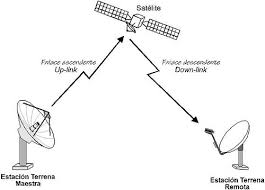
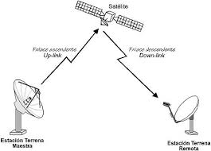

Introducción
Dentro de los medios no guiados, la radiofrecuencia, las microondas, los satélites y el infrarrojo son tecnologías ampliamente utilizadas. Cada una ofrece características particulares. Tanenbaum resalta su importancia en redes inalámbricas.
Desarrollo
La radiofrecuencia permite transmisiones de corto y largo alcance, las microondas se utilizan en enlaces punto a punto, los satélites facilitan la comunicación global y el infrarrojo se emplea en distancias cortas. Según Stallings, estas tecnologías han impulsado el crecimiento de las comunicaciones móviles.
 

Conclusión
En conclusión, los medios no guiados ofrecen soluciones versátiles para diferentes necesidades de comunicación, siendo indispensables en la era digital.